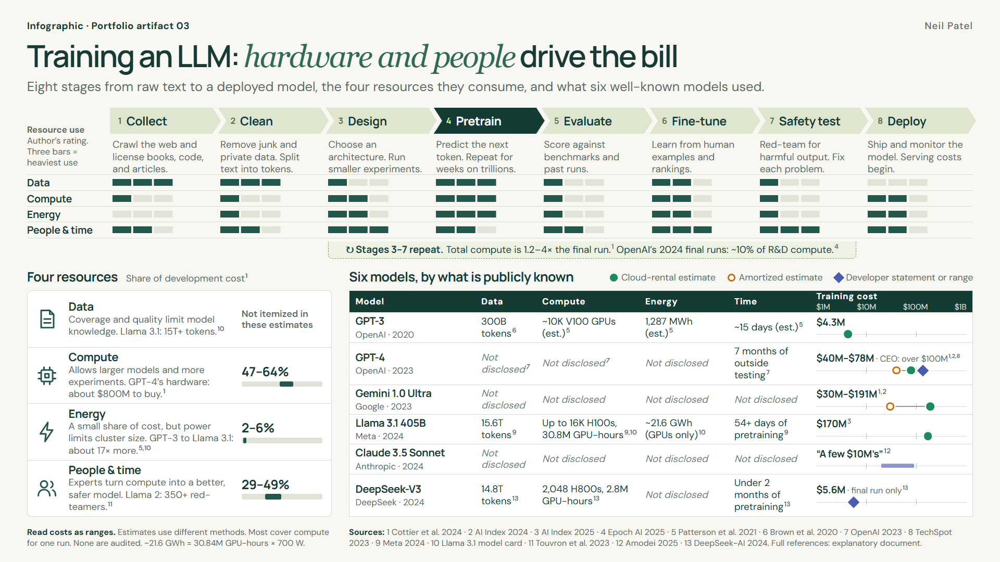

Explanatory document, portfolio artifact 03
What it takes to train an LLM


This infographic shows the training process for large language models and its costs. This document explains the main points, the key considerations, and my design choices.
Main points
- Training runs through eight stages. The stages are collect, clean, design, pretrain, evaluate, fine-tune, safety test, and deploy. I rate pretraining as the heaviest user of compute and energy. Teams repeat stages 3 through 7 across many experiments and test runs. Total development compute runs 1.2 to 4 times the final training run [1]. Final runs took about 10% of OpenAI’s estimated R&D compute in 2024 [4].
- Hardware and people make up most of the cost. Hardware accounts for 47% to 64% of development cost across four large models. R&D staff account for 29% to 49%, and that range includes equity pay. Energy accounts for the smallest share, at 2% to 6% of development cost [1].
- Each resource shapes the model in its own way. Training data sets the limits of the model’s knowledge and language coverage. Compute pays for larger models and more experiments during development. Available power caps the size of any training cluster. Researchers, engineers, and testers turn that capacity into a useful and safer product. Llama 2 used more than 350 people for red teaming [11].
- Scale grew fast. GPT-3 trained on 300 billion tokens in 2020, and Llama 3.1 405B trained on 15.6 trillion in 2024 [6, 9]. GPT-3 used an estimated 1,287 MWh [5]. That equals the yearly electricity of about 119 U.S. homes [14]. Llama 3.1 405B used 30.84 million GPU-hours [10]. I calculated about 21.6 GWh from that figure. That equals the yearly electricity of about 2,000 homes.
- Costs vary widely. DeepSeek reports $5.6M for the final run of DeepSeek-V3 [13]. The AI Index estimates $191M for Gemini 1.0 Ultra [2]. Frontier run costs grew about 2.4 times per year starting in 2016 [1].
Key considerations
- The estimates use different methods. Cloud-rental estimates price a run at rental rates [2, 3]. Amortized estimates spread hardware cost across its useful life [1]. Amortized figures run about half as high on average [1]. GPT-4 shows $40M to $78M for this reason, and Gemini 1.0 Ultra shows $30M to $191M. Each method has its own marker on the graphic.
- Headline numbers leave out real costs. DeepSeek’s $5.6M assumes $2 per GPU-hour and excludes earlier research and experiments [13]. Epoch’s breakdown omits some data center and maintenance costs [1]. Neither source lists data licensing as a cost.
- Developers share little. OpenAI withheld GPT-4’s model size, hardware, training compute, and dataset details [7]. The AI Index reports a decline in disclosure [3]. The graphic prints “Not disclosed” in those cells.
- I flag the weaker figures. The Llama energy number is my own math: 30.84M GPU-hours times 700 W. The estimate leaves out the power for cooling, CPUs, and networking. Patterson et al. estimated GPT-3’s GPU count and training days [5]. Anthropic’s CEO put Claude 3.5 Sonnet at “a few $10M’s” [12]. I drew that phrase as a band from $20M to $90M, and the band is my reading. TechSpot reported Sam Altman’s claim of a GPT-4 cost above $100M [8].
- The stage bars show my judgment. They are qualitative ratings and not measurements, so the slide labels them as mine.
Design rationale
- The title states the finding. A reader gets the main point from the headline alone.
- One matrix joins process and resources. Arrows show the order of the stages, and bars under each arrow show resource use. The dark arrow marks pretraining, the heaviest stage.
- A log scale fits the cost range. Costs run from about $4M to $191M. A linear axis crowds the small values together at the left edge. I placed the markers inside the model table, so each cost sits beside that model’s facts.
- Accessibility guided the markers. Solid circles, hollow circles, and diamonds separate the estimate types. Color never carries meaning alone on any part of the chart. Every cost appears in text next to its marker. The chart colors passed a color vision check. The web version uses real tables with screen reader labels, and the layout adjusts for phones.
- The style matches the portfolio. The slide uses the portfolio’s colors and fonts, so it reads as part of one body of work.
Data dates. These figures cover models through 2024. I found no verifiable training data for most newer models.
References
- Cottier, B., et al. (2024). The rising costs of training frontier AI models. arXiv.
- Stanford HAI. (2024). Artificial Intelligence Index Report 2024. Source of the GPT-3, GPT-4, and Gemini estimates. I took the GPT-3 figure from a secondary listing of this report’s data.
- Stanford HAI. (2025). Artificial Intelligence Index Report 2025, Chapter 1.
- You, J. (2025). Most of OpenAI’s 2024 compute went to experiments. Epoch AI.
- Patterson, D., et al. (2021). Carbon emissions and large neural network training. arXiv.
- Brown, T. B., et al. (2020). Language models are few-shot learners. arXiv.
- OpenAI. (2023). GPT-4 technical report. arXiv.
- TechSpot. (2023). Size doesn’t matter for AI models, says OpenAI CEO Sam Altman.
- Llama Team, AI @ Meta. (2024). The Llama 3 herd of models. arXiv.
- Meta. (2024). Llama 3.1 model card. GitHub.
- Touvron, H., et al. (2023). Llama 2: Open foundation and fine-tuned chat models. arXiv.
- Amodei, D. (2025). On DeepSeek and export controls.
- DeepSeek-AI. (2024). DeepSeek-V3 technical report. arXiv.
- U.S. Energy Information Administration. How much electricity does an American home use? The 2022 average is 10,791 kWh per year.
- IBM Technology. How large language models work. YouTube.
- Eye on Tech. What is ChatGPT? (In about a minute). YouTube.
- Wolfram, S. (2023). What is ChatGPT doing … and why does it work?